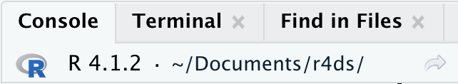

6 工作流：脚本和项目
本章将向你介绍两个用于组织代码的重要工具：脚本和项目。
6.1 脚本
到目前为止，你一直在使用控制台来运行代码。 这是一个很好的起点，但当你创建更复杂的 ggplot2 图形和更长的 dplyr 管道时，你会发现它很快就会变得拥挤不堪。 为了给自己更多的工作空间，请使用脚本编辑器。 通过点击文件 (File) 菜单，选择新建文件 (New File)，然后选择 R 脚本 (R script)，或者使用键盘快捷键 Cmd/Ctrl + Shift + N 来打开它。 现在你会看到四个窗格，如 Figure 6.1 所示。 脚本编辑器是试验代码的好地方。 当你想修改某些东西时，你不必重新输入所有内容，只需编辑脚本并重新运行即可。 而且，一旦你编写了能够正常工作并实现你想要的功能的代码，你就可以将其保存为脚本文件，以便日后轻松返回。
6.1.1 运行代码
脚本编辑器是构建复杂 ggplot2 图或长序列 dplyr 操作的绝佳场所。 有效使用脚本编辑器的关键是记住一个最重要的键盘快捷键：Cmd/Ctrl + Enter。 这个快捷键会在控制台中执行当前的 R 表达式。 例如，看下面的代码。
library(dplyr)
library(nycflights13)
not_cancelled <- flights |>
filter(!is.na(dep_delay)█, !is.na(arr_delay))
not_cancelled |>
group_by(year, month, day) |>
summarize(mean = mean(dep_delay))如果你的光标在 █ 处，按下 Cmd/Ctrl + Enter 将会运行生成 not_cancelled 的完整命令。 它还会将光标移动到下一个语句（以 not_cancelled |> 开头）。 这使得通过重复按 Cmd/Ctrl + Enter 来逐步执行你的完整脚本变得容易。
除了逐个表达式运行代码外，你还可以使用 Cmd/Ctrl + Shift + S 一步执行整个脚本。 定期这样做是确保你已将代码的所有重要部分都保存在脚本中的好方法。
我们建议你始终以所需的包开始你的脚本。 这样，如果你与他人共享代码，他们可以轻松看到需要安装哪些包。 但请注意，你永远不应该在你共享的脚本中包含 install.packages()。 如果别人不小心，你递给他们的脚本可能会在他们的计算机上改变某些东西，这是不体贴的！
在学习后续章节时，我们强烈建议从脚本编辑器开始，并练习你的键盘快捷键。 随着时间的推移，以这种方式向控制台发送代码将变得如此自然，以至于你甚至不会去想它。
6.1.2 RStudio 诊断功能
在脚本编辑器中，RStudio 会用红色波浪线和侧边栏中的叉号高亮显示语法错误：

将鼠标悬停在叉号上可以看到问题所在：

RStudio 也会提示你潜在的问题：

6.1.3 保存与命名
当你退出 RStudio 时，它会自动保存脚本编辑器的内容，并在你重新打开时自动重新加载。 尽管如此，最好还是避免使用 Untitled1、Untitled2、Untitled3 等名称，而是保存你的脚本并给它们起一些信息丰富的名字。
你可能会想把文件命名为 code.R 或 myscript.R，但在为文件选择名称之前，你应该再多考虑一下。 文件命名的三个重要原则如下：
- 文件名应该是机器可读的：避免使用空格、符号和特殊字符。不要依赖大小写来区分文件。
- 文件名应该是人类可读的：使用文件名来描述文件内容。
- 文件名应该与默认排序方式良好配合：以数字开头的文件名可以使它们按字母顺序排序时，也按使用顺序排列。
例如，假设你的项目文件夹中有以下文件。
alternative model.R
code for exploratory analysis.r
finalreport.qmd
FinalReport.qmd
fig 1.png
Figure_02.png
model_first_try.R
run-first.r
temp.txt这里存在各种问题：很难找到首先要运行哪个文件，文件名包含空格，有两个同名但大小写不同的文件（finalreport vs. FinalReport1），还有一些文件名没有描述其内容（run-first 和 temp）。
以下是命名和组织同一组文件的更好方式：
01-load-data.R
02-exploratory-analysis.R
03-model-approach-1.R
04-model-approach-2.R
fig-01.png
fig-02.png
report-2022-03-20.qmd
report-2022-04-02.qmd
report-draft-notes.txt为关键脚本编号使得运行顺序一目了然，而一致的命名方案也更容易看出变化之处。 此外，图形的标签也类似，报告通过文件名中包含的日期来区分，temp被重命名为 report-draft-notes 以更好地描述其内容。 如果你一个目录中有很多文件，建议更进一步，将不同类型的文件（脚本、图形等）放在不同的目录中。
6.2 项目
总有一天，你需要退出 R，去做些别的事情，然后再回来继续你的分析。 总有一天，你会同时进行多个分析，并且你希望将它们分开。 总有一天，你需要将外部世界的数据导入 R，并将数值结果和图形从 R 输出到外部世界。
为了处理这些现实生活中的情况，你需要做出两个决定：
什么是事实的唯一来源 (source of truth)？ 你将保存什么作为你所做工作的持久记录？
你的分析工作存放在哪里？
6.2.1 什么是事实的唯一来源？
作为初学者，依赖当前环境 (Environment) 来包含你在整个分析过程中创建的所有对象是可以的。 然而，为了更容易地处理大型项目或与他人协作，你的事实的唯一来源应该是 R 脚本。 有了你的 R 脚本（和你的数据文件），你就可以重现环境。 而只有你的环境，要重现你的 R 脚本就困难得多：你要么得凭记忆重新输入大量代码（不可避免地会出错），要么就得仔细挖掘你的 R 历史记录。
为了帮助你将 R 脚本作为分析的事实的唯一来源，我们强烈建议你设置 RStudio 在会话之间不保存你的工作区。 你可以通过运行 usethis::use_blank_slate()2 或模仿 Figure 6.2 中显示的选项来做到这一点。这会给你带来一些短期的痛苦，因为现在当你重启 RStudio 时，它将不再记得你上次运行的代码，你创建的对象或读取的数据集也无法使用。 但是这种短期的痛苦可以让你免于长期的折磨，因为它迫使你将所有重要的过程都记录在你的代码中。 没有什么比在三个月后发现你只把一个重要计算的结果保存在你的环境中，而不是把计算本身保存在你的代码中更糟糕的了。

有一对很棒的键盘快捷键可以协同工作，确保你已经将代码的重要部分保存在编辑器中：
- 按 Cmd/Ctrl + Shift + 0/F10 重启 R。
- 按 Cmd/Ctrl + Shift + S 重新运行当前脚本。
我们每周会集体使用这个模式数百次。
另外，如果你不使用键盘快捷键，你可以去菜单栏的 Session > Restart R，然后高亮并重新运行你当前的脚本。
RStudio Server
如果你正在使用 RStudio Server，你的 R 会话默认是永远不会重启的。 当你关闭你的 RStudio Server 标签页时，可能感觉像是在关闭 R，但服务器实际上在后台保持它的运行。 下次你回来时，你将回到你离开时的确切位置。 这使得定期重启 R 以便从一个干净的状态开始变得更加重要。
6.2.2 你的分析工作存放在哪里？
R 有一个强大的概念，叫做工作目录 (working directory)。 这是 R 寻找你要求它加载的文件的位置，也是它存放你要求它保存的任何文件的位置。 RStudio 在控制台的顶部显示你当前的工作目录：

你也可以通过运行 getwd() 在 R 代码中打印出这个路径：
getwd()
#> [1] "/Users/hadley/Documents/r4ds"在这个 R 会话中，当前的工作目录（可以把它想象成“家”）在 hadley 的 Documents 文件夹下的一个名为 r4ds 的子文件夹中。 当你运行这段代码时，会返回一个不同的结果，因为你的计算机有与 Hadley 不同的目录结构！
作为 R 的初学者，让你的工作目录是你的主目录、文档目录或你电脑上任何其他奇怪的目录都是可以的。 但你已经读了这本书好几章了，你不再是初学者了。 很快你就应该进化到将你的项目组织到目录中，并且在处理一个项目时，将 R 的工作目录设置到相关的目录。
你可以在 R 内部设置工作目录，但我们不推荐这样做：
setwd("/path/to/my/CoolProject")有一个更好的方法；一个也能让你走上像专家一样管理你的 R 工作之路的方法。 这个方法就是 RStudio 项目。
6.2.3 RStudio 项目
将与某个特定项目相关的所有文件（输入数据、R 脚本、分析结果和图表）都放在一个目录中，这是一个非常明智和普遍的做法，以至于 RStudio 通过项目 (projects) 内置了对此的支持。 让我们为你创建一个项目，以便你在学习本书余下部分时使用。 点击 File > New Project，然后按照 Figure 6.3 中显示的步骤操作。

将你的项目命名为 r4ds，并仔细考虑你将项目放在哪个子目录中。 如果你不把它存放在某个合理的地方，将来会很难找到它！
这个过程完成后，你将为这本书得到一个新的 RStudio 项目。 检查一下你的项目的“家”是否就是当前的工作目录：
getwd()
#> [1] /Users/hadley/Documents/r4ds现在在脚本编辑器中输入以下命令，并将文件保存为 “diamonds.R”。 然后，创建一个名为 “data” 的新文件夹。 你可以通过点击 RStudio 中文件窗格的“新建文件夹”按钮来完成此操作。 最后，运行整个脚本，这会将一个 PNG 和一个 CSV 文件保存到你的项目目录中。 不用担心细节，你将在本书的后面学到它们。
退出 RStudio。 检查与你的项目关联的文件夹 —— 注意那个 .Rproj 文件。 双击该文件以重新打开项目。 你会发现你回到了你离开的地方：工作目录和命令历史都一样，你正在处理的所有文件也仍然打开着。 因为你遵循了我们上面的指示，你将会有一个全新的环境，保证你从一个干净的状态开始。
用你喜欢的操作系统特有的方式，在你的电脑上搜索 diamonds.png，你会找到这个 PNG 文件（不奇怪），但同时也能找到创建它的脚本 (diamonds.R)。 这是一个巨大的胜利！ 总有一天，你会想要重制一张图，或者只是想了解它是从哪里来的。 如果你严格地用 R 代码将图表保存到文件，而不是用鼠标或剪贴板，你将能够轻松地重现以前的工作！
6.2.4 相对路径和绝对路径
一旦你进入一个项目中，你应该只使用相对路径，而不是绝对路径。 有什么区别呢？ 相对路径是相对于工作目录的，也就是项目的主目录。 当 Hadley 在上面写 data/diamonds.csv 时，它是 /Users/hadley/Documents/r4ds/data/diamonds.csv 的一个快捷方式。 但重要的是，如果 Mine 在她的电脑上运行这段代码，它会指向 /Users/Mine/Documents/r4ds/data/diamonds.csv。 这就是为什么相对路径很重要：无论 R 项目文件夹最终在哪里，它们都能工作。
绝对路径无论你的工作目录在哪里，都指向同一个地方。 它们根据你的操作系统看起来有点不同。 在 Windows 上，它们以一个驱动器字母（例如，C:）或两个反斜杠（例如，\\servername）开头，而在 Mac/Linux 上，它们以一个斜杠 “/” 开头（例如，/users/hadley）。 你永远不应该在你的脚本中使用绝对路径，因为它们妨碍了共享：没有其他人会有和你完全相同的目录配置。
操作系统之间还有一个重要的区别：你如何分隔路径的组件。 Mac 和 Linux 使用斜杠（例如 data/diamonds.csv），而 Windows 使用反斜杠（例如 data\diamonds.csv）。 R 可以处理任何一种类型（无论你当前使用的是哪个平台），但不幸的是，反斜杠对 R 来说有特殊的含义，要在路径中得到一个反斜杠，你需要输入两个反斜杠！ 这让生活变得很烦恼，所以我们建议总是使用 Linux/Mac 风格的正斜杠。
6.3 练习
访问 RStudio Tips 的 Twitter 账户 https://twitter.com/rstudiotips，找到一条你觉得有趣的技巧。 练习使用它！
RStudio 的诊断功能还会报告哪些其他常见的错误？ 阅读 https://support.posit.co/hc/en-us/articles/205753617-Code-Diagnostics 来找出答案。
6.4 总结
在本章中，你学会了如何将你的 R 代码组织在脚本（文件）和项目（目录）中。 就像代码风格一样，这起初可能感觉像是繁琐的工作。 但随着你在多个项目中积累了越来越多的代码，你将学会欣赏一点点前期的组织工作能在未来为你节省大量时间。
总而言之，脚本和项目为你提供了一个坚实的工作流，将在未来为你带来很好的服务：
- 为每个数据分析项目创建一个 RStudio 项目。
- 将你的脚本（用信息丰富的名称）保存在项目中，编辑它们，分部分或整体运行它们。频繁重启 R 以确保你已经将所有内容都保存在你的脚本中。
- 只使用相对路径，绝不使用绝对路径。
这样，你需要的一切都在一个地方，并与你正在进行的所有其他项目清晰地分离开来。
到目前为止，我们一直使用的是 R 包中捆绑的数据集。 这使得在预先准备好的数据上进行一些练习变得更容易，但显然你的数据不会以这种方式提供。 因此，在下一章中，你将学习如何使用 readr 包将数据从磁盘加载到你的 R 会话中。